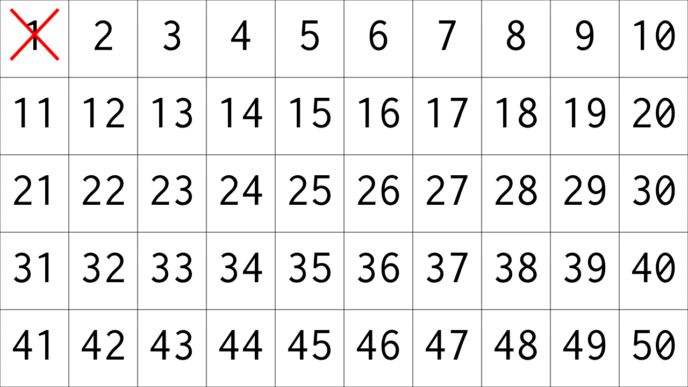
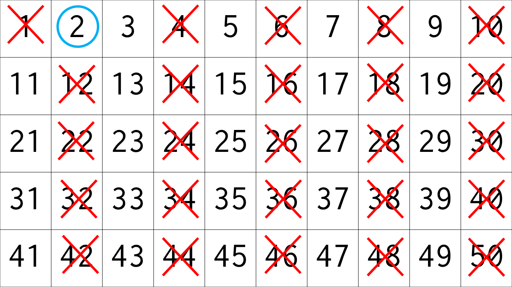
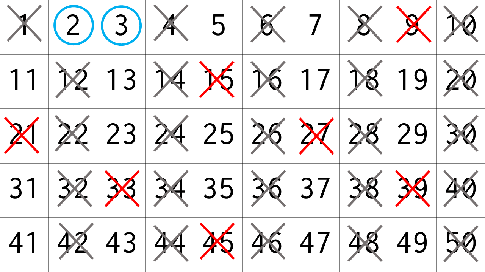
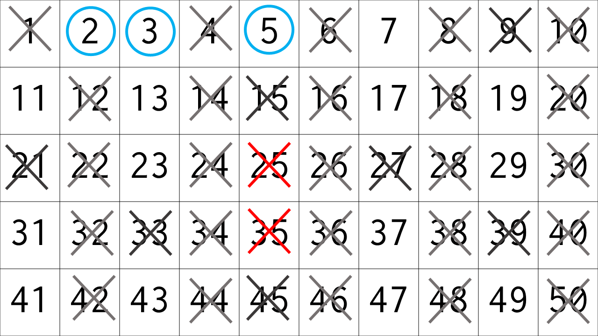
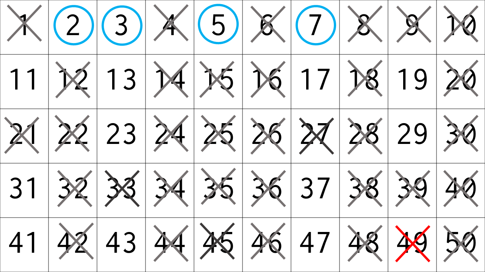
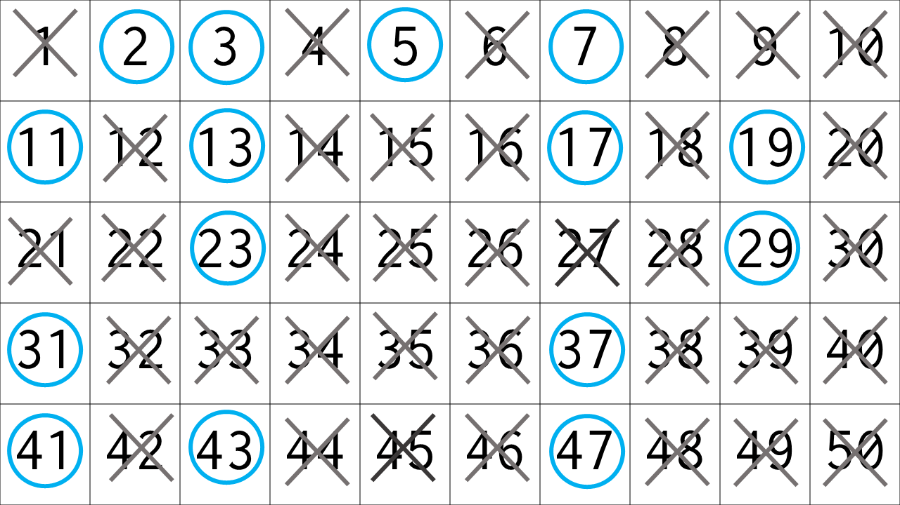

エラトステネスの篩の解説
1.エラトステネスの篩とは
1~nのそれぞれの数字が素数かどうかを判定するアルゴリズムです。結果はbool型の配列に格納しておき、配列のインデックスに調べたい数字を入れるという方法で利用するのが一般的です。
2.エラトステネスの篩
いきなりサンプルコード(C++)↓↓
#include<iostream>
#include<vector>
using namespace std;
int main() {
int n;
cin >> n;
vector<bool> is_P(n + 1,true);
is_P[0] = is_P[1] = false;
for (int i = 2; i * i <= n; i++) {
if (is_P[i] == false) continue;
for (int j = i * i; j <= n; j += i) is_P[j] = false;
}
//1~nまでの判定結果
for (int i = 1; i <= n; i++) cout <<i<<":"<< is_P[i] << "\n";
return 0;
}
①is_Pのすべての要素を"true"にセット
②is_P[0]とis_P[1]を"false(素数ではない)"に変更
③i=2からi*iが判定したい数値に達するまで(実コードでは+10ほど余裕を持たせている)以下の操作を繰り返す
(a)is_P[i]が"false"なら何もせずにiに1を加える
(b)is_P[i]が"true"なら、iは素数で決まりで、i*i以降のiの倍数について、is_Pの値を"false"に書き換える
④is_P[判定したい数値]が"true"なら素数、"false"なら素数ではない。
実際の動作を見てみよう(1~50までの場合)
(1)まず1に×をつける(0は省略)

(2)i=2のとき、2は素数で、2*2以降の2の倍数は素数ではないと決まる

(3)i=3のとき、3は素数で、3*3以降の3の倍数は素数ではないと決まる。
このとき、6も3の倍数だが6=3*2は2の倍数の処理でもう排除されている。
このように、n=p*q(p<q)のときnが素数でないことは、qの倍数の処理で決まっている。
これが、i以降ではなくi*i以降の処理でよい理由である。

(4)i=4はすでに×がついている。i=5についても同様の操作を行う。

(5)i=6は飛ばす。i=7により×が増える

(6)i=8でi*iは50を超えるので操作終了。生き残って数字はすべて素数である。

3.計算量
O(n*loglog(n))と言われている。解説は他の記事に譲る。